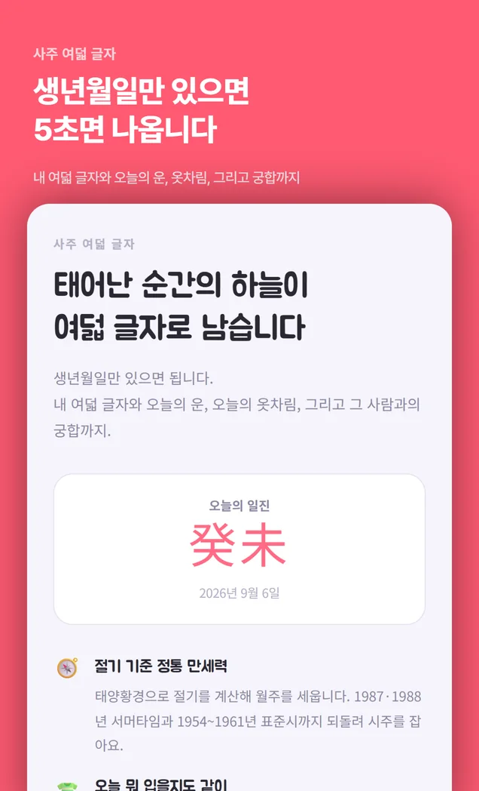
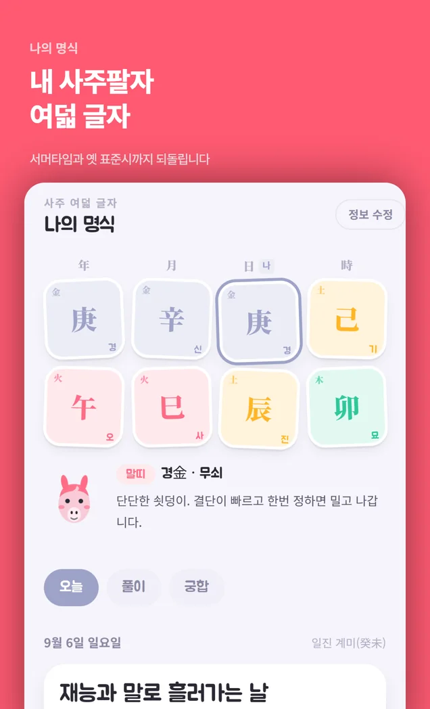
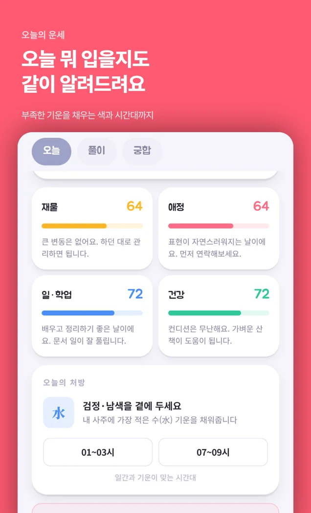

화면 둘러보기



옆으로 넘기세요
특징
사주는 태어난 순간의 하늘을 여덟 글자로 적는 것입니다. 그 계산에 서버가 필요하지 않아서, 보내지 않습니다.
시간을 모르면 몰라도 됩니다. 여덟 글자가 바로 세워집니다.
태양황경으로 절기를 계산합니다. 1987·1988년 서머타임과 1954~1961년 표준시 차이까지 보정합니다.
오늘의 일진과 내 명식을 겹쳐 네 갈래로 봅니다. 이번 주 흐름도 같이.
기상청 예보에 내 사주의 기운을 얹어 오늘 뭘 입을지 색과 소재로 권합니다.
상대 생년월일을 넣으면 두 명식을 나란히 놓고 봅니다. 상대 정보도 기기 안에만 있습니다.
생년월일·명식·궁합 상대 모두 폰 안에서만. 밖으로 나가는 건 날씨 요청 하나입니다.
약속
여는 법
따로 설치할 게 없습니다. 토스가 이미 있으면 끝입니다.
‘사주 여덟 글자’ 또는 ‘사주’.
입력한 값은 이 폰에만 저장됩니다. 지우면 끝입니다.
알아둘 것
다른 앱